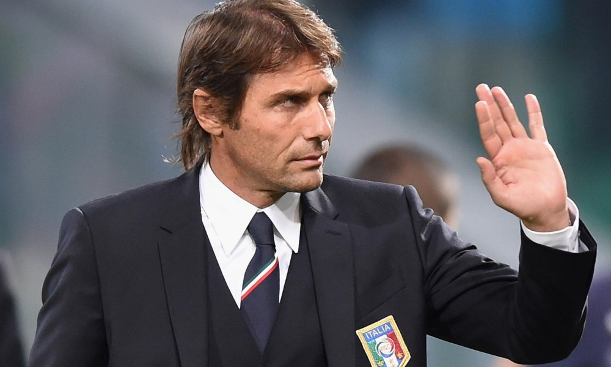

The Latest Chelsea Football Club News. Keep the Blue Flag Flying High.
Headlines Video of the Week More NewsScore Center
Chelsea 2-2 West BromChelsea 1-2 PSG
Chelsea 4-4 Man U
Conte to become Chelsea manager after Euro 2016
Antonio Conte will step down from his position as manager of Italy following Euro 2016. Conte has been heavily linked with the managerial vacancy at Chelsea and this move increases the prospect of him taking over at Stamford Bridge. The 46-year-old was appointed Italy manager in August 2014 shortly after resigning as coach of Juventus. "I feel that I must go back to being a coach in a club to have the opportunity of coaching every day," said Conte. Conte led the Turin club to three successive Serie A titles prior to taking on the national job. Chelsea sacked Jose Mourinho as their manager in December 2015 and appointed Guus Hiddink on an interim basis until the end of the season.
More.Eden Hazard to leave for PSG
Barclays Player of the Year 2014, Eden Hazard, has been tempted by a mega offer by Parisian club PSG. The offer is believed to eclipse the $100m world record fee paid by Real Madrid to Manchester United for Cristaino Ronaldo. Although the club have consistently asserted he is not for sale, an offer of the magnitude the French club has offered cannot be ignored. Eden Hazard has been in poor form this season, and has yet to record a single goal or assist. Neither the club nor the player were available for comment.
More.Chelsea 2 West Brom 2

James McClean's late equaliser earned West Brom a share of the points as they refused to accept defeat at Chelsea. The Blues went ahead when Cesar Azpilicueta turned in fellow full-back Branislav Ivanovic's low cross. Craig Gardner's skimming shot levelled, but it seemed Chelsea had done enough when Gareth McAuley prodded Willian's cross into his own net.But when the home defence failed to clear McClean made them pay with a pinpoint shot into the bottom corner. The Republic of Ireland international's leveller was the final twist in an often ill-tempered game with Chelsea striker Diego Costa at the centre of several flashpoints.
More.Juve want Cuadrado permanently

Juventus have warned Chelsea that the reported impending appointment of Antonio Conte will not affect the club's stance of keeping Juan Cuadrado. Colombian international Cuadrado is on a season-long loan at Juve and the Italian champions do want to follow through on a gentlemen's agreement to sign the wideman permanently this summer. According to the Evening Standard, current Italy boss Conte, who is expected to become Chelsea's next full-time boss after Euro 2016, has told the Blues board that he wants Cuadrado back at Stamford Bridge.However, Juve chief executive Giuseppe Marotta is confident of landing the 27-year-old on a long-term deal.
More.Guus Hiddink mum on Pato
The Brazilian striker is yet to make his first appearance for the west London club after joining the Blues on loan from Corinthians until the end of the season back in January. Pato has been working on his fitness levels at Chelsea’s Cobham training ground in recent weeks but is yet to earn a place in the starting line-up.Hiddink opted to start Loic Remy in the place of Diego Costa for Saturday’s game.And asked in his post-mach news conference if he considered bring on Pato, Hiddink replied: “When Costa is not there we have Remy, we also have Traore and Pato.""
More.Musonda rejected Barcelona

Real Betis loanee Charly Musonda has revealed that he turned down the chance to join Barcelona in 2012 in favour of a move to parent club Chelsea.The 19-year-old left Anderlecht's famed youth academy at 16 to join the Blues, with whom he is still yet to make his first-team debut for. Musonda says Chelsea's decision to also snap up his brothers Lamisha and Tika played a key role in him snubbing the advances of Barcelona. "It is true that I rejected Barcelona because Chelsea also agreed to sign my brothers," Musonda told Marca.
More.